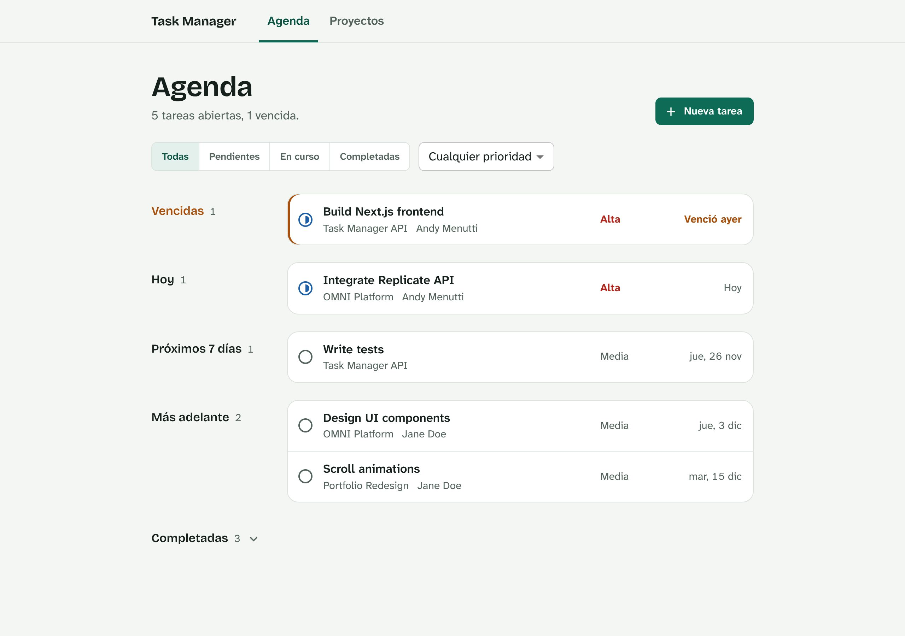
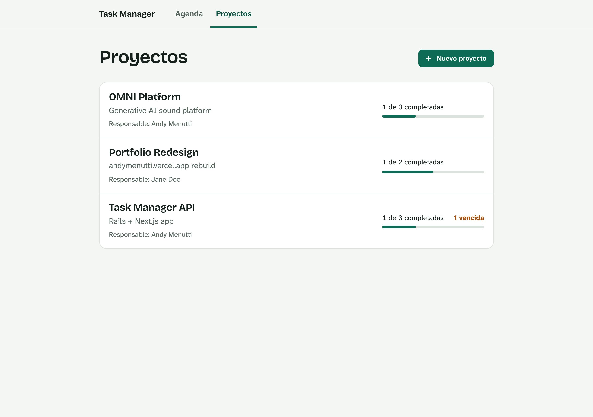
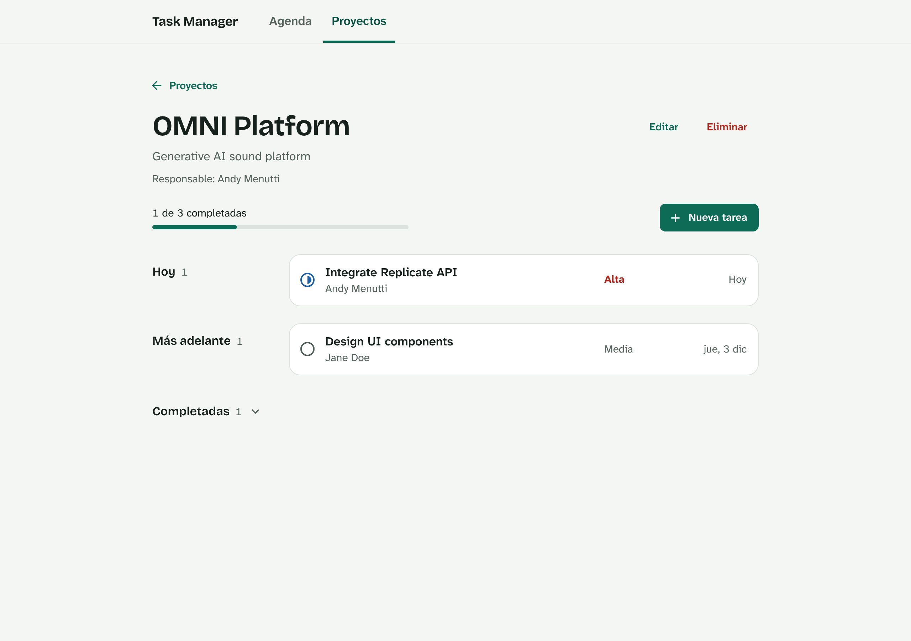
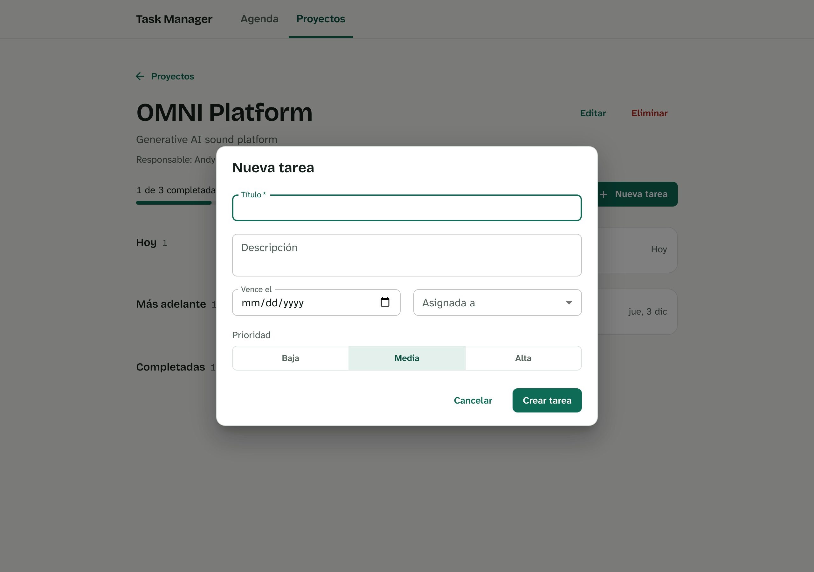

Gestión de proyectos y tareas con estado, prioridad, responsables y una agenda por vencimiento. Backend en Ruby on Rails 8 en modo API y frontend en Next.js 16, con PostgreSQL y todo levantado con Docker Compose. Project and task management with status, priority, assignees and a due-date agenda. A Ruby on Rails 8 API-only back end and a Next.js 16 front end, with PostgreSQL, all running under Docker Compose.
Capturas de la app corriendo con los datos de ejemplo del propio repositorio (db/seeds.rb). Screenshots of the app running with the repository’s own sample data (db/seeds.rb).
Todas las tareas abiertas agrupadas por vencimiento: vencidas, hoy, próximos 7 días y más adelante. Filtros por estado y prioridad, y el estado se cambia con un clic.Every open task grouped by due date: overdue, today, next 7 days and later. Filters by status and priority, and status changes with one click.

Cada proyecto con su responsable y una barra de avance de tareas completadas.Each project with its owner and a progress bar of completed tasks.

Las tareas del proyecto con prioridad, responsable y fecha, y acciones para editar o eliminar el proyecto.The project’s tasks with priority, assignee and date, plus actions to edit or delete the project.

Formulario con validación (React Hook Form): título, descripción, vencimiento, responsable y prioridad.A validated form (React Hook Form): title, description, due date, assignee and priority.

El front habla con una API JSON versionada. Tiene 23 tests (modelos y controladores) que pasan.The front end talks to a versioned JSON API, covered by 23 passing tests (models and controllers).
| GET | /api/v1/projects | Lista de proyectos con sus tareasProjects with their tasks |
| POST | /api/v1/projects | Crear un proyectoCreate a project |
| GET · PATCH · DELETE | /api/v1/projects/:id | Ver, editar o borrar un proyectoShow, update or delete a project |
| POST | /api/v1/projects/:project_id/tasks | Crear una tarea en un proyectoCreate a task in a project |
| GET | /api/v1/tasks | Tareas, filtrables por estado y prioridadTasks, filterable by status and priority |
| GET · PATCH · DELETE | /api/v1/tasks/:id | Ver, editar o borrar una tareaShow, update or delete a task |
| PATCH | /api/v1/tasks/:id/status | Cambiar solo el estadoChange only the status |
| GET | /api/v1/users | Usuarios para asignar tareasUsers to assign tasks to |